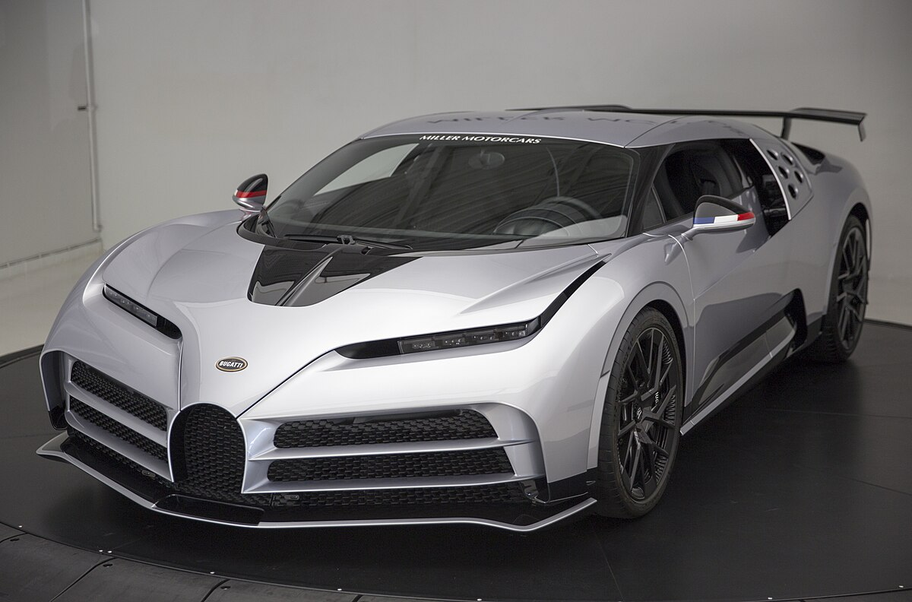

Histoire de Bugatti
Bugatti est une marque de voitures de luxe française, fondée en 1909 par l'ingénieur italien Eugène Bugatti à Molsheim, en Alsace. Bugatti est renommée pour ses voitures exceptionnelles qui combinent puissance, élégance et performance.
Les Voitures Emblématiques de Bugatti
Bugatti Veyron 16.4
,_5._April_2012,_Düsseldorf.jpg)
La Bugatti Veyron, lancée en 2005, est l'une des voitures les plus rapides et les plus puissantes de tous les temps.
Caractéristiques
- Moteur : W16 8,0 L
- Puissance : 1001 ch
- Vitesse maximale : 407 km/h
- Poids : 1 888 kg
- Production : 450 exemplaires
Bugatti Chiron

La Bugatti Chiron, lancée en 2016, est la remplaçante de la Veyron, avec une puissance de 1500 ch et une vitesse maximale de 420 km/h.
Caractéristiques
- Moteur : W16 8,0 L
- Puissance : 1500 ch
- Vitesse maximale : 420 km/h
- Accélération 0-100 km/h : 2,5 secondes
- Production : 500 exemplaires
Bugatti Divo
.jpg)
La Bugatti Divo, produite à seulement 40 exemplaires, est une voiture ultra-exclusive qui allie performance extrême et design épuré.
Caractéristiques
- Moteur : W16 8,0 L
- Puissance : 1500 ch
- Vitesse maximale : 380 km/h
- Accélération 0-100 km/h : 2,4 secondes
- Production : 40 exemplaires
Bugatti Centodieci
La Bugatti Centodieci, inspirée de la légendaire Bugatti EB110, rend hommage aux 110 ans de la marque et affiche une puissance de 1600 ch.
Caractéristiques
- Moteur : W16 8,0 L
- Puissance : 1600 ch
- Vitesse maximale : 380 km/h
- Accélération 0-100 km/h : 2,4 secondes
- Production : 10 exemplaires
Bugatti Veyron Super Sport

La Veyron Super Sport est une version améliorée de la Veyron, avec 1200 ch et une vitesse maximale de 431 km/h, un véritable chef-d'œuvre technologique.
Caractéristiques
- Moteur : W16 8,0 L
- Puissance : 1200 ch
- Vitesse maximale : 431 km/h
- Poids : 1 950 kg
- Production : 30 exemplaires
Technologie et Innovation
Bugatti se distingue par ses avancées technologiques exceptionnelles, combinant performance, aérodynamisme et matériaux de pointe pour créer des voitures parmi les plus rapides du monde.
- Technologie moteur : Bugatti utilise un moteur W16 révolutionnaire qui permet des performances inégalées en termes de vitesse et d'accélération.
- Système de suspension adaptative : Les voitures Bugatti sont dotées de systèmes de suspension qui s'adaptent en temps réel aux conditions de conduite, assurant une stabilité maximale.
- Matériaux ultra-légers : Bugatti utilise des matériaux comme le carbone et l'aluminium pour minimiser le poids de ses voitures tout en garantissant leur robustesse et leur sécurité.
Les Origines de Bugatti
Fondée en 1909 par Ettore Bugatti à Molsheim, en Alsace, Bugatti est une marque emblématique qui symbolise l'innovation, l'artisanat et l'excellence technique. Ettore Bugatti, connu pour son génie créatif, a conçu des voitures non seulement performantes, mais aussi d'une beauté sculpturale, faisant de Bugatti une icône de l'automobile.
L'Âge d'Or : Les Années 1920 et 1930
Les années 1920 et 1930 marquent l'âge d'or de Bugatti avec des modèles légendaires comme la Bugatti Type 35, une voiture de course qui a remporté plus de 2 000 victoires, et la Bugatti Royale, une voiture de luxe réservée à l'élite mondiale. Ces véhicules étaient non seulement des chefs-d'œuvre d'ingénierie, mais aussi des œuvres d'art.
Technologie et Innovation
Bugatti se distingue par ses avancées technologiques exceptionnelles, combinant performance, aérodynamisme et matériaux de pointe pour créer des voitures parmi les plus rapides du monde.
- Technologie moteur : Bugatti utilise un moteur W16 révolutionnaire qui permet des performances inégalées en termes de vitesse et d'accélération.
- Système de suspension adaptative : Les voitures Bugatti sont dotées de systèmes de suspension qui s'adaptent en temps réel aux conditions de conduite, assurant une stabilité maximale.
- Matériaux ultra-légers : Bugatti utilise des matériaux comme le carbone et l'aluminium pour minimiser le poids de ses voitures tout en garantissant leur robustesse et leur sécurité.
Les Modèles Récents
Aujourd'hui, Bugatti continue de repousser les limites avec des modèles comme la Bugatti Chiron, capable d'atteindre une vitesse de pointe de 490 km/h, et la Bugatti Divo, conçue pour offrir une expérience de conduite inégalée sur les routes sinueuses.
L'Héritage de Bugatti
Bugatti est bien plus qu'une marque automobile. C'est une philosophie, une quête incessante de perfection et de beauté. Les voitures Bugatti incarnent l'art, la performance et le luxe, continuant à fasciner les amateurs d'automobiles du monde entier.